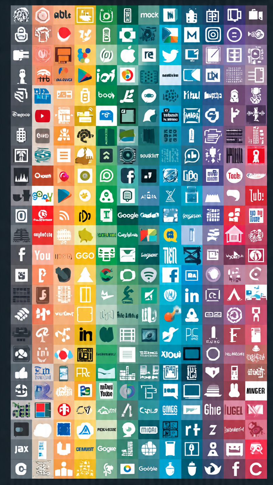

In 2026, major technology companies like Google, Amazon, and Meta are facing increasing scrutiny from the United States government. As these companies continue to grow in power and influence, regulators are stepping in to ensure fair competition, protect user privacy, and control the rapid development of artificial intelligence.
Over the past decade, Big Tech companies have expanded into nearly every aspect of digital life. From online shopping to social media and cloud computing, these companies dominate the market. Governments now worry that too much control in the hands of a few corporations could harm consumers and smaller businesses.
Lawmakers believe that companies like Google and Amazon have created ecosystems that make it difficult for competitors to survive. Meta, which owns Facebook and Instagram, has also been criticized for its influence over social media and online communication.

One of the biggest concerns is data privacy. These companies collect massive amounts of user data, including personal preferences, browsing habits, and location information. Governments are now introducing stricter laws to ensure that this data is handled responsibly.
New regulations may require companies to be more transparent about how data is collected and used. Users may also get more control over their information, including the ability to delete or restrict access to their data.
Artificial intelligence is another major focus. Companies like Google and Meta are heavily investing in AI technologies, including chatbots, automation tools, and advanced algorithms. While these innovations bring benefits, they also raise concerns about safety, bias, and misuse.
Governments are working on rules to limit how AI can be used. These rules may include restrictions on facial recognition, automated decision-making, and deepfake content. The goal is to ensure that AI is used ethically and responsibly.
Another major step being considered is breaking up monopolies. This means forcing large companies to split into smaller entities to promote competition. For example, regulators may require companies to separate their different business units.
By doing this, governments hope to create a more level playing field where smaller companies can compete and innovate. This could lead to more choices and better services for consumers.
These changes will have a significant impact on both users and businesses. For users, increased privacy and transparency are positive developments. However, some services may change or become more restricted.
For businesses, especially startups, these regulations could open up new opportunities. With fewer barriers to entry, smaller companies may find it easier to compete with established tech giants.
The future of Big Tech regulation is still uncertain. While governments are pushing for change, companies are also fighting back through legal challenges and lobbying efforts. The outcome of this battle will shape the digital world for years to come.
As technology continues to evolve, finding the right balance between innovation and regulation will be crucial. One thing is clear: the era of unchecked Big Tech dominance may be coming to an end.
Check out trending tech products here:
View Deals on Amazon